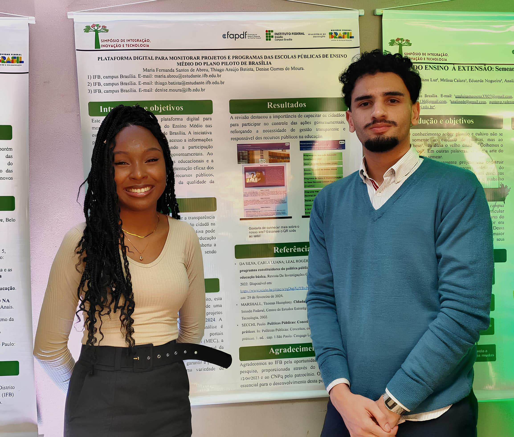

Escolas monitoradas
--
Apresentação do projeto
Monitoramento Digital
Projeto PIBIC/IFB criado por Maria Fernanda Santos e Thiago Araújo para apresentar, organizar e monitorar programas educacionais nas escolas de ensino médio do Plano Piloto.
Programas mapeados
--Em execução
--Pontos de atenção
--Apresentação
Transparência para acompanhar políticas públicas educacionais.
Somos Maria Fernanda e Thiago Araújo, alunos do Instituto Federal de Brasília, nos cursos de Gestão Pública e Sistemas para Internet. Esta plataforma apresenta informações sobre programas e projetos da Secretaria de Educação do GDF e do MEC voltados ao ensino médio no Plano Piloto.
A proposta é reduzir a opacidade informacional, apoiar o controle social e permitir que comunidade escolar, gestores e cidadãos acompanhem a implementação das ações com mais clareza.
Propósito
Centralizar informações e facilitar o acompanhamento público.
Dados
Organizar status, programas, escolas e fontes externas.
Controle social
Dados organizados para acompanhamento público.

Pesquisa aplicada à transparência
Projeto desenvolvido no contexto do PIBIC/IFB para reduzir a opacidade informacional sobre políticas públicas educacionais no Distrito Federal.
Escolas
Unidades em acompanhamento
Carregando escolas da API...